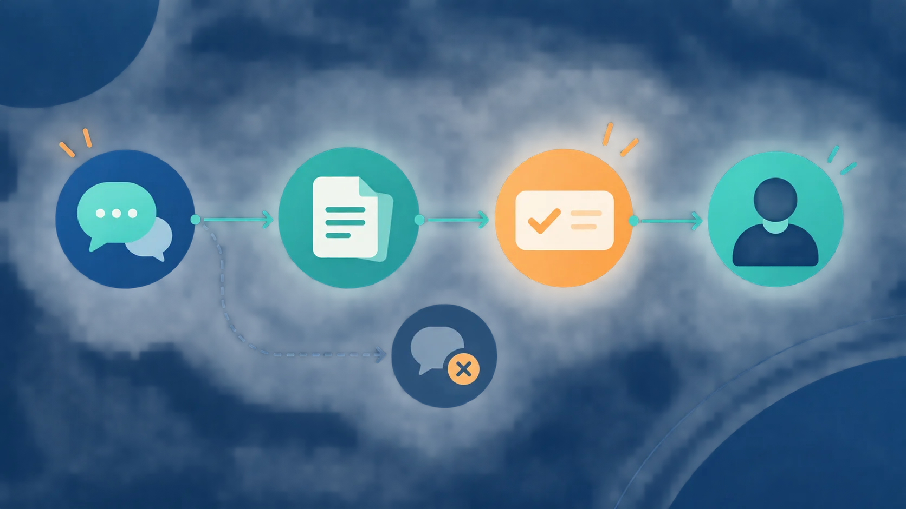

Article · 飞函
Article · 飞函
新成员加入项目群后，如何快速补齐决策背景和历史讨论
研发同事刚加入项目群，就接到“按上次讨论的方案推进”的任务。群里有几周的消息、数份不同版本的文件，还有一场会议之后的补充意见。若只找到一句“就这么定了”，却不知道当时排除了什么方案、谁负责落实，执行时仍可能走回已经否决的路。
新成员需要补的不是全部聊天记录，而是一条可核对的决策链。
先找结论，再回看形成过程
项目负责人可以为每项仍在执行的关键决定留一条简短索引，写清四件事：当前结论、决定依据、未解决的分歧、下一步责任人。例如，测试范围为何调整，要同时指向提出调整的讨论、最终确认的消息和对应版本的测试计划。这样，新成员先建立任务地图，再按需回看原始对话，而不必从入群第一天的消息逐条读起。
索引最好由实际负责该事项的人维护。讨论中出现新结论时，补上“替代了哪项旧决定”；还没达成一致时，明确标为待确认，不把某个人的提议写成团队共识。

把消息、文件和人对应起来
补背景时，可按正在承担的任务搜索项目代号、方案名称或关键问题，沿着讨论找到相关文件，再核对文件版本与确认人。若群内消息与文件内容不一致，先询问负责人哪一项仍有效，不凭消息时间自行推断。对于只在会议上口头确定的事项，也应由参会负责人回到项目群补一条结论，让后来加入的人有据可查。
在飞函中，历史消息同步和全局搜索可作为回看讨论的入口；网盘可承接项目文件，并支持按成员或部门配置共享权限。它们帮助新成员找到材料，但不会自动判断哪条讨论才是最终决定：结论仍需团队明确记录和确认。具体可见范围应以所在组织的权限配置为准。(feihanim.cn)
用一次交接检验是否真正补齐
让新成员用自己的话复述三件事：目前按哪个方案做、为什么不采用此前方案、遇到尚未定论的问题找谁。负责人据此纠正误读，并把缺失的依据补进决策索引。后续再有成员加入，就能沿着同一条路径接手，而不是反复请老成员从头讲一遍。
项目群的价值不仅在于保存讨论，更在于让讨论与结论保持可追溯的关系。可搜索的历史记录，加上有人负责维护的决策索引，才能把“进了群”变成“接得上工作”。